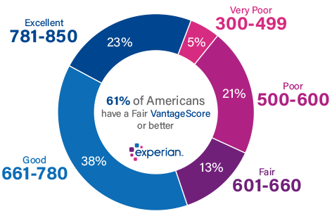

We offer the best Interest rates
Apply For Loan
Check your credit score
There are multiple institutions such as CIBIL, CRIF, Experian and Equifax that provide credit scoring for individual customers in India. These bureaus measure your credit score on a scale of 300 to 900, which is assessed on the basis of your credit card usage, loans, repayments and previous loan or credit card applications
Interest rates, fees, and charges
When it comes to taking a loan, the first thing that will come to your mind is the interest rate. There are two forms of interest rates—fixed and floating. The fixed rate is one that is not affected by market fluctuations, whereas floating rate changes accordingly. The fixed rate is slightly higher than the floating rate. It is necessary to evaluate the pros and cons in both cases.
Loan tenure
The higher the tenure, higher will be the absolute amount of interest paid. Therefore, it is recommended to keep the loan repayment period as low as possible so that you do not end up paying more than what is required.
Documentation
As you go through all the loan documents, make sure you pay extra attention to all the terms and conditions of the agreement including those mentioned in small text in the document.

Check your credit score
Your credit score should preferably be more than 700 to improve your chances of getting a home loan approved. If your track record of paying credit card dues and loans is not stellar, then clean it up before initiating the loan application process.
Interest rates, fees, and charges
You should keep in mind the various fees and charges that are attached to the loan-taking process. Some of these fees and charges include loan processing fees, penalty on late payment, verification charges and service tax.
Loan tenure
However, the loan tenure should always be calculated while keeping your paying capacity in mind.
Documentation
Lack of information regarding the loan application process is a major reason why most people either tend to shy away from taking any loans or end up miscalculating their finances. Keeping the above points in mind may help you make a calculated decision regarding loan.